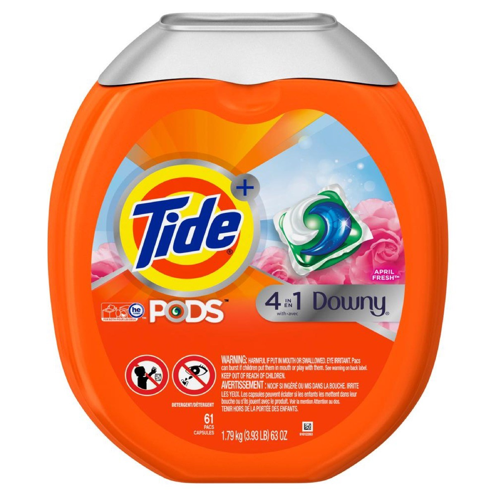

Unleash the new smell and taste of clean clothes
Tide is not just a product; it’s a promise. It’s not just any laundry detergent; it’s one that renews clothes and the stories they tell. It’s strong in stain removal, but gentle on clothes. For more than 70 years, Tide has set the highest standards for laundry care. Tide not only works to deliver you the cleanest clothes, but also helps you be more eco-friendly when it comes to doing the laundry. Whether your laundry challenges manifest as stains, odors, or soiling, we can help with all your laundry needs. Simply put your garments in the machine, and let Tide take care of the rest.
How To Use
What is high efficiency? These washers clean using up to 80% less water than traditional washers. Not only do they save water, they also deliver up to 65% energy savings and can handle larger laundry loads than traditional machines. If you're new to the HE washer world, it’s best to learn how to use an HE washer to get optimum laundry results. Find out all you need to know about high-efficiency washers and HE detergent here.
Buy Now
Please consider purchasing this fabulous product